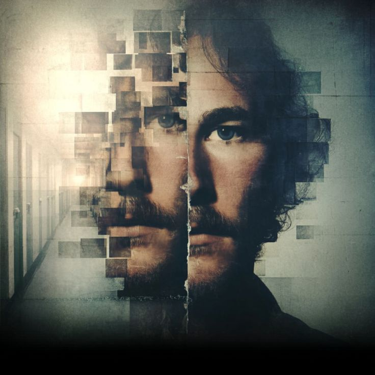
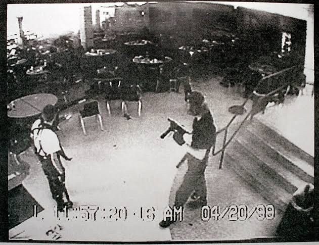

BILLY MILLIGAN
Billy Milligan fue un hombre estadounidense que se hizo conocido por ser acusado de varios delitos en la década de 1970. Su caso llamó la atención debido a que fue diagnosticado con trastorno de identidad disociativo y se convirtió en uno de los casos judiciales más conocidos relacionados con este diagnóstico.
Ver más
La matanza de Columbine
La masacre de Columbine ocurrió el 20 de abril de 1999 en una escuela secundaria de Colorado, Estados Unidos. Dos estudiantes atacaron a sus compañeros y profesores, causando numerosas víctimas. El caso impactó al mundo y abrió un debate sobre la violencia escolar y la seguridad en las instituciones educativas.
Ver másJUNKO FURUTA
Junko Furuta fue una adolescente japonesa de 17 años que fue secuestrada y sufrió torturas y abusos durante aproximadamente 40 días en 1988 y 1989. Su caso conmocionó a Japón por la crueldad de los hechos y generó indignación por las decisiones judiciales relacionadas con los responsables.
Ver más